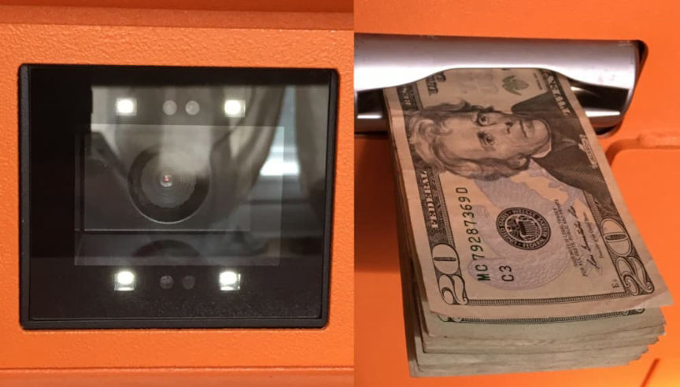
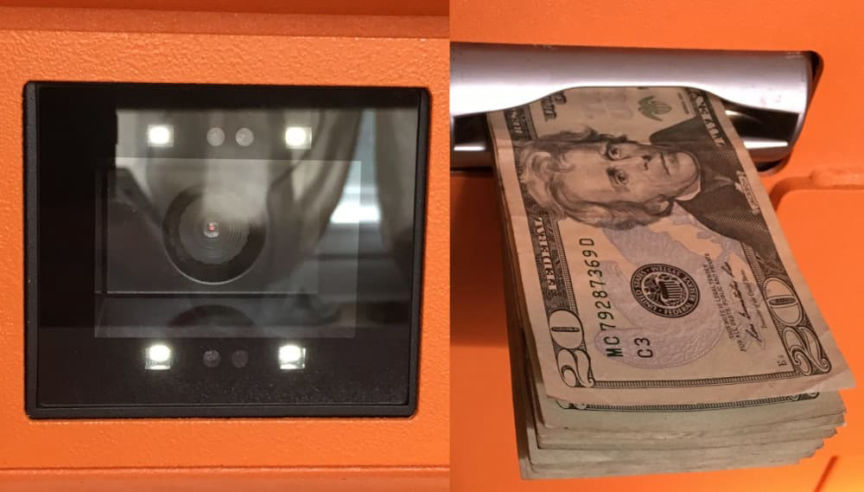

Bitcoin ATM CEO Pleads Guilty to FinCEN Violations
~5 min read | Published on 2021-12-10, tagged Cryptocurrency, General-News, Pleaded-Guilty using 1020 words.
Brannen Mehaffey, the CEO of BASH Bitcoin ATMs, unknowingly conducted business with undercover federal agents through LocalBitcoins and other platforms. He also failed to register his LocalBitcoins transactions and network of 20 Bitcoin ATMs as a money transmitting business with the Department of the Treasury.
Mehaffey, who operated out of Phoenix, Arizona, and Austin, Texas, pleaded guilty to one count of operating an unlicensed money transmitting business. As we reported in December 2020, the Department of Justice had originally charged Mehaffey with several crimes, including seven counts of money laundering and one count of structuring financial transactions. In a Criminal Information, the DOJ charged Mehaffey with one count of operating an Unlicensed Money Transmitting Business.

Between January 2018 and October 2020, Mehaffey moved at least $3,000,000 through bank accounts under his control.
The original report on this site as well as the indictment focused primarily on the defendant’s role as the CEO of BASH Bitcoin ATMs. The factual basis in the Plea Agreement focuses on Mehaffey’s position as a prominent exchanger on LocalBitcoins as well as his private interactions with undercover federal agents. One of the highlighted factors in the original report was that at least one fraudster had used Mehaffey’s services after scamming someone. In the Plea Agreement, Mehaffey detailed how he developed a business relationship with undercover law enforcement officers who eventually told Mehaffey about the illicit source of their cryptocurrency.
Between January 2018 and October 2020, I regularly exchanged bitcoin for U.S. currency. I operated from Austin, Texas but sent bitcoin, via an application on my cell phone, to people across the country. Typically I received U.S. dollars from individual members of the public via cash, check or wire into bank accounts I controlled, and I sent the bitcoin to different individuals. I received money from D.P. in Arizona in this way in December 2018 through February 2019, and I also received money from F.F. in Arizona in the same way in January 2020. I earned a commission on each exchange, at approximately 8% of the value of the currency exchanged.
[img=]BASH ATMs[/img]
I advertised my business on the internet. On LocalBitcoins.com I instructed prospective bitcoin buyers as follows: “What you do with bitcoin is your business and not mine. Please do not speak of how you use it.” I knew that I was obligated to register with the Financial Crimes Enforcement Network (“FinCEN”) and that I was obligated to file currency transaction reports with FinCEN for exchanges above $10,000; I did neither. I also learned from some of the people who wired or otherwise exchanged currency that they were involved in (or victims of) fraudulent activity, including romance fraud. More than three million dollars were wired into accounts controlled by me in this period.
In January 2020 I began to exchange bitcoin for cash with a man I knew only by his first name. We met in person on a few occasions, and also communicated via text. I now understand that the man was an undercover agent. In March 2020 he mentioned for the first time that he was involved in the sale of drugs like ecstasy; I still exchanged bitcoin for him, and I accepted $8,000 in cash in Austin, with another $13,000 structured into Arizona banks at my direction. (I did not file a currency transaction report.) In April 2020 the man mentioned for the first time that his main source of money came from cocaine sales. I immediately directed him to use an encrypted application (Telegram) for future conversations, and I still exchanged bitcoin for him and his associates, with the cash structured into Arizona bank accounts at my direction.
[img=]At least one of the claims made on the BASH ATM website appears to be false.[/img]
In April, the man referred an associate to work with me directly. I knew her by her first name, and we communicated via interstate communications through WhatsApp (audio and video, and text). I now understand that she was also an undercover agent. I asked her not to talk about “the other side of things” but when she referenced her cocaine money – and how she wanted the bitcoin to be able to pay her suppliers – I continued doing business with her. In May 2020 I exchanged bitcoin with her while I was in Austin and she was in Arizona. In particular, on May 19, 2020, I directed her to send $5,000 from Arizona to Austin via Federal Express (with the money hidden in the pages of a magazine), and I directed her to structure another $12,900 into Arizona banks. (I did not file a currency transaction report.)
Under the Bank Secrecy Act, banks and other financial institutions must file a specific report to the IRS about any transaction over $10,000. According to the government, this requirement helps the IRS investigate money launderers, among other things. It is a violation of federal law to intentionally split a large transaction into multiple parts in an attempt to avoid triggering the creation of a currency transaction report.

The indictment listed nine transactions between $2,000 and $9,900 as a part of Mehaffey’s attempt to structure financial transactions. The DOJ agreed to dismiss the charges listed in the indictment in exchange for Mehaffey’s guilty plea for the FinCEN regulation violation charge.
In addition to spending up to five years in prison, Mehaffey agreed to forfeit the following assets:[list]*$88,290.00 in United States Currency;*$425.00 in United States Currency;*$2,900.00 in United States Currency;*$250.00 in United States Currency;*$1,000.00 United States Postal Service Money Order Serial;*$1,000.00 United United States Currency[/list]
He will also pay up to $4,000,000 in restitution to all victims impacted directly or proximately harmed by the defendant’s “relevant conduct,” including harm caused by dismissed charges.
The plea agreement indicates that the U.S. Attorney’s Office will recommend a reduction in the Sentencing Guidelines offense level. However, the defendant violated the terms of his pre-trial release by catching a DUI charge in Texas. His ongoing cooperation with the government works in his favor, though, and he is unlikely to receive a five-year prison sentence.
Image file size was awfully large for this post. Sorry about that.
Mehaffey, who operated out of Phoenix, Arizona, and Austin, Texas, pleaded guilty to one count of operating an unlicensed money transmitting business. As we reported in December 2020, the Department of Justice had originally charged Mehaffey with several crimes, including seven counts of money laundering and one count of structuring financial transactions. In a Criminal Information, the DOJ charged Mehaffey with one count of operating an Unlicensed Money Transmitting Business.
Mehaffey in a promotional picture for BASH ATMs.
Between January 2018 and October 2020, Mehaffey moved at least $3,000,000 through bank accounts under his control.
The original report on this site as well as the indictment focused primarily on the defendant’s role as the CEO of BASH Bitcoin ATMs. The factual basis in the Plea Agreement focuses on Mehaffey’s position as a prominent exchanger on LocalBitcoins as well as his private interactions with undercover federal agents. One of the highlighted factors in the original report was that at least one fraudster had used Mehaffey’s services after scamming someone. In the Plea Agreement, Mehaffey detailed how he developed a business relationship with undercover law enforcement officers who eventually told Mehaffey about the illicit source of their cryptocurrency.
Between January 2018 and October 2020, I regularly exchanged bitcoin for U.S. currency. I operated from Austin, Texas but sent bitcoin, via an application on my cell phone, to people across the country. Typically I received U.S. dollars from individual members of the public via cash, check or wire into bank accounts I controlled, and I sent the bitcoin to different individuals. I received money from D.P. in Arizona in this way in December 2018 through February 2019, and I also received money from F.F. in Arizona in the same way in January 2020. I earned a commission on each exchange, at approximately 8% of the value of the currency exchanged.
[img=]BASH ATMs[/img]
I advertised my business on the internet. On LocalBitcoins.com I instructed prospective bitcoin buyers as follows: “What you do with bitcoin is your business and not mine. Please do not speak of how you use it.” I knew that I was obligated to register with the Financial Crimes Enforcement Network (“FinCEN”) and that I was obligated to file currency transaction reports with FinCEN for exchanges above $10,000; I did neither. I also learned from some of the people who wired or otherwise exchanged currency that they were involved in (or victims of) fraudulent activity, including romance fraud. More than three million dollars were wired into accounts controlled by me in this period.
In January 2020 I began to exchange bitcoin for cash with a man I knew only by his first name. We met in person on a few occasions, and also communicated via text. I now understand that the man was an undercover agent. In March 2020 he mentioned for the first time that he was involved in the sale of drugs like ecstasy; I still exchanged bitcoin for him, and I accepted $8,000 in cash in Austin, with another $13,000 structured into Arizona banks at my direction. (I did not file a currency transaction report.) In April 2020 the man mentioned for the first time that his main source of money came from cocaine sales. I immediately directed him to use an encrypted application (Telegram) for future conversations, and I still exchanged bitcoin for him and his associates, with the cash structured into Arizona bank accounts at my direction.
[img=]At least one of the claims made on the BASH ATM website appears to be false.[/img]
In April, the man referred an associate to work with me directly. I knew her by her first name, and we communicated via interstate communications through WhatsApp (audio and video, and text). I now understand that she was also an undercover agent. I asked her not to talk about “the other side of things” but when she referenced her cocaine money – and how she wanted the bitcoin to be able to pay her suppliers – I continued doing business with her. In May 2020 I exchanged bitcoin with her while I was in Austin and she was in Arizona. In particular, on May 19, 2020, I directed her to send $5,000 from Arizona to Austin via Federal Express (with the money hidden in the pages of a magazine), and I directed her to structure another $12,900 into Arizona banks. (I did not file a currency transaction report.)
Under the Bank Secrecy Act, banks and other financial institutions must file a specific report to the IRS about any transaction over $10,000. According to the government, this requirement helps the IRS investigate money launderers, among other things. It is a violation of federal law to intentionally split a large transaction into multiple parts in an attempt to avoid triggering the creation of a currency transaction report.

Promotional materials available on the BASH ATM website.
The indictment listed nine transactions between $2,000 and $9,900 as a part of Mehaffey’s attempt to structure financial transactions. The DOJ agreed to dismiss the charges listed in the indictment in exchange for Mehaffey’s guilty plea for the FinCEN regulation violation charge.
In addition to spending up to five years in prison, Mehaffey agreed to forfeit the following assets:[list]*$88,290.00 in United States Currency;*$425.00 in United States Currency;*$2,900.00 in United States Currency;*$250.00 in United States Currency;*$1,000.00 United States Postal Service Money Order Serial;*$1,000.00 United United States Currency[/list]
He will also pay up to $4,000,000 in restitution to all victims impacted directly or proximately harmed by the defendant’s “relevant conduct,” including harm caused by dismissed charges.
The plea agreement indicates that the U.S. Attorney’s Office will recommend a reduction in the Sentencing Guidelines offense level. However, the defendant violated the terms of his pre-trial release by catching a DUI charge in Texas. His ongoing cooperation with the government works in his favor, though, and he is unlikely to receive a five-year prison sentence.
Image file size was awfully large for this post. Sorry about that.